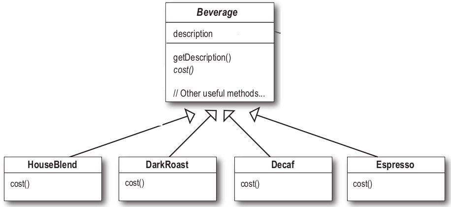
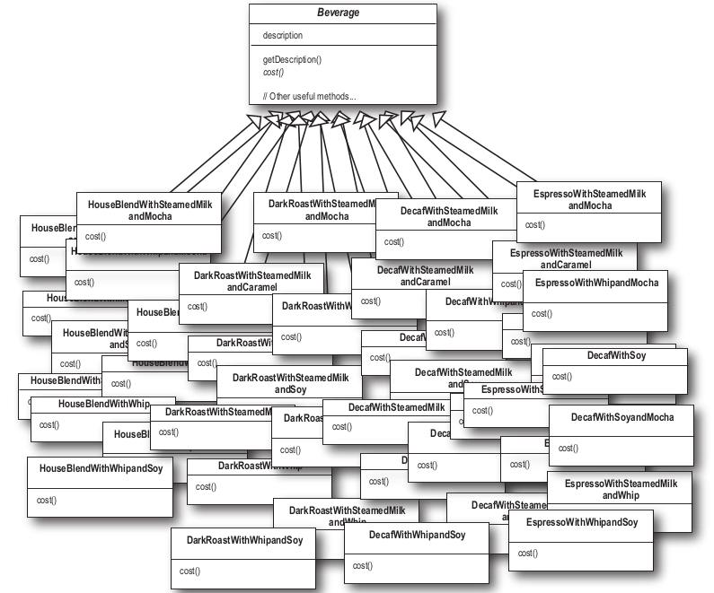
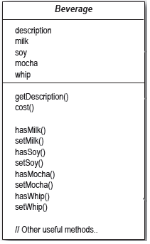
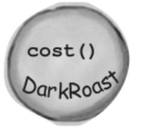
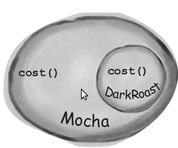
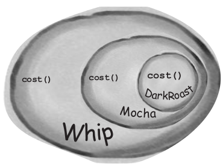
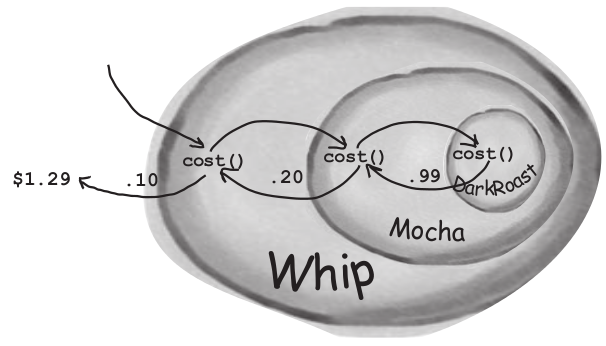
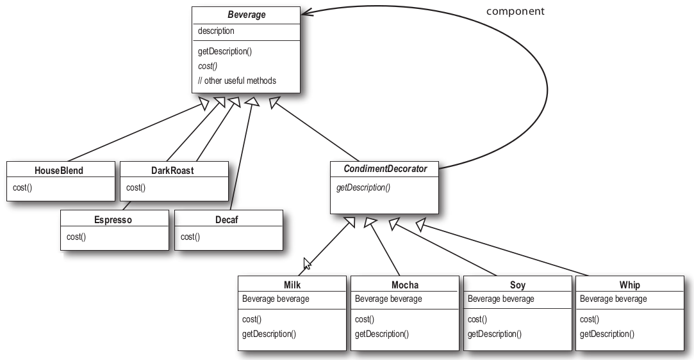
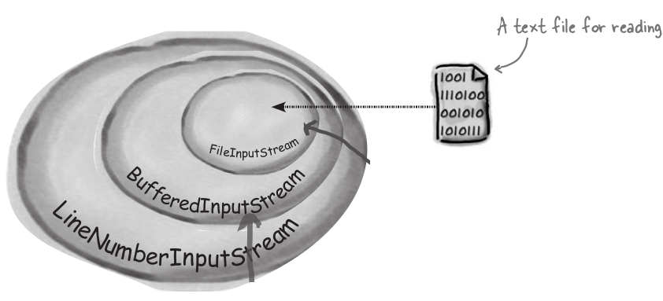
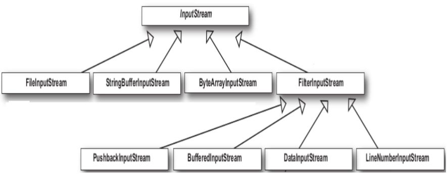

Cafetería
Tenemos una cafetería que tiene una implementación inicial, y que esta creciendo rápidamente, agregando nuevos productos

- Beverage es una clase abstracta, heredada por todos los brebajes que se vendan en la cafetería.
- El método cost() es abstracto, las subclases necesitan crear su propia implementación, con el costo de cada brebaje
- Descripción es una variable de instancia que cada clase usa para guarda una descripción del producto.
- GetDescription() devuelve la descripción.
Cafetería
Al los brebajes se le pueden agregar condimentos como leche, chocolate, leche y leche batida. La cafetería le carga el precio un poco por cada adicional, y tienen que reflejarlo en el precio final.

Que pasa si el precio de la leche sube?
Que pasa si se agrega un nuevo condimento
Es obvio que este diseño no sirve, cada vez que quiero cambiar un precio de un adicional hay que cambiar todas las clases que lo usan
Cafetería
Otro diseño
Probamos con un diseño en el que representamos los condimentos y adicionales con variables de instancia.

Variables de instancia booleanas para cada condimento para saber si tiene o no.
Implementamos cost() en en en vez de dejarlo abstracto, las subclases van a sobreescribir cost() pero el cost() de la subclase va a usar el de la superclase, así pueden calcular el costo básico del brebaje de acuerdo a los adicionales en la supeclase y en la subclase sumarle el costo de los ingredientes agregados específicos.
Cafetería
Implementación supeclase Beverage
Cafetería
Implementación de una de las subclases
método main
Problemas de la implementación
Qué requerimientos o factores pueden cambiar que puedan impactar en el diseño?
- La implementación de hardcodear los valores en la superclase hacer que haya que modificar el código cada cambio de precio.
Esto se podría haber solucionado haciendo variables de clase en ves de instancia y cargándolos en el programa cuando corre.
- Condimentos nuevos hacen que haya que cambiar el método cost() de la suerclase.
- Todos los brebajes nuevos van a tener los métodos de todos los condimentos aunque no se posible por regla de negocio.
- Que pasa si uno quiere doble ración de condimento? (no podemos calcular el precio)
Problemas de la implementación
Qué principios de diseño de los que vinos, no respetamos en esta implementación?
- Identificar los aspectos de la aplicación que varían y separarlos de los que permanecen.
- Programar a interfaces, no a implementaciones
- Favorecer la composición sobre la herencia. "Tener un" puede ser mejor que "ser un".
- Esforzarse por diseños con acoplamiento débil entre los objetos que interactúan.
Problemas de la implementación
Qué principios de diseño de los que vinos, no respetamos en esta implementación?
- Identificar los aspectos de la aplicación que varían y separarlos de los que permanecen.
- Programar a interfaces, no a implementaciones
- Favorecer la composición sobre la herencia. "Tener un" puede ser mejor que "ser un".
- Esforzarse por diseños con acoplamiento débil entre los objetos que interactúan.
Repaso de conceptos
Como se hace entonces para tener re uso sin usar herencia?
Hay maneras de hacer heredar comportamiento en tiempo de ejecución a través de la composición y delegación.
Cuando se hereda comportamiento por subclases ese comportamiento esta seteado en tiempo de compilado, y además todas las subclases heredar el mismo comportamiento, quedando como alternativa la sobreescritura de los métodos heredados como alternativa para cambiar el comportamiento heredado.
Sin embargo si puedo extender el comportamiento de un objeto a través de composición, puedo adquirirlo o cambiarlo en tiempo de ejecución.
Repaso de conceptos
Podemos agregar nuevas responsabilidades a los objetos a través de la composición, Inclusive se pueden agregar responsabilidades que no fueron pensadas por el diseñador de la superclase y sin tocar el código.
En el strategy a un pato se le asignaba una estrategia de vuelo o de quak en tiempo de ejecución.
Usando composición se puede agregar de manera dinámica nuevas funcionalidades a los objetos escribiendo nuevo código, evitando cambiar el código ya existente, y con esto disminuyendo las chances de introducir bugs o causar efectos no deseados en el código.
Principio de diseño
Las clases tiene que estar abiertas para la extensión pero cerradas para la modificación.
El objetivo es extender clases incorporar nuevos comportamientos si modificar el código existente. (heredar sin modificar el código).
Se logran diseños que son resistentes al cambio y flexibles para incorporar nuevas funcionalidades y alcanzar los requerimientos de cambio.
Suena raro abierto para heredar cerrado para modificar pero hay técnicas en la programación orientada a objetos que permiten extender funcionalidad sin cambiar el código, por ejemplo el Observer, agregando nuevos observers al Subject sin sin agregar ningún código. Decorator es un buen ejemplos de este principio.
Principio de diseño
No se puede hacer que todo el código siga este principio.
Hacer los diseños flexibles y abiertos lleva tiempo y esfuerzo además de agregarle nuevos niveles de abstracción y complejidad al código.
Nos vamos a concentrar en las áreas que suelen cambiar.
Para saber cuales áreas cambian mas, hay que conocer bien las reglas de negocio.
Patron decorator
Vimos que representar nuestro brebaje con condimento con herencia no andaba muy bien, teniamos una explosion de clases (primer intento), diseños rígidos , o agregabamos funcionaidad a la clase base (segundo intento) que no era apropiada para todas las subclases y traia problemas de mantenimiento al agregar algun condimento.
Lo que vamos a hacer con el patrón decorator vamos a arrancar con el brebaje y decorarlo con condimentos en tiempo de ejecución.
Ej: el cliente quiere Dark Roast con Mocha y Whip
- Tomamos el objeto DarkRoast
- Lo decoramos con el objeto Mocha
- Lo decoramos con el objeto Whip
- Llamamos al metodo cost() que se basa en delegacion para agregarle los costos de cada condimento
Como decoramos?
- Arrancamos instanciando el objeto DarkRoast que hereda de Beverage, que tiene un método cost() para calcular el costo de la bebida.
Recordemos que el problema nuestro era el calculo de costo de los adicionales, que en una implementacion se hacía una clase para cada una de las opciones que se puedieran presentar y en la otra la supeclase era la que calculaba el costo los adicionales y luego la subclase el valor del producto específico.

Como decoramos?
- Si queremos agregarle un adicional creamos el objeto del adicional y lo ponemos alrededor de él. Mocha (el de afuera) va a tener una relación de asociación con DarkRoast).
El objeto mocha es el decorador, tiene el mismo tipo del objeto que está decorando, en este caso brebaje.
Entonces mocha tiene un método costo también y usando el polimorfismo podemos tratar a cualquier objeto envuelto en mocha como un brebaje (Mocha es un subtipo de Beverage).

Como decoramos?
- Si le queremos agregar Whip, creamos un objeto whip decorator y envolvemos con este a mocha.
Whip es un decorador asi que tambien tiene el mismo tipo que DarkRoast e implementa cost().
Un objeto DarkRoast envuelto en Mocha y Whip sigue siendo un brevaje y puede hacer todo lo que hacíamos con DarkRost incluyendo calcular cost()

Como decoramos?
- Ahora es tiempo de calcular el costo para un cliente, hacemos esto llamando cost() en el decorador más externo, Whip en este caso y este va a delegar el cálculo al objeto que decora.
Una ves que el de adentro le devuelve el costo le adiciona el costo suyo del condimiento Whip.

Resumiendo
- Los decoradores tienen el mismo tipo del objeto que decoran, esto quiere decir que tienen una variable de instancia para lo que decoran
- Se pueden usar mas de un decorador para envolver a un objeto.
- Dado que el decorador tiene el mismo supertipo del objeto que decora, podemos pasar sobre un objeto decorado en lugar del objeto original (envuelto).
- El decorador agrega su propio comportamiento o antes o despues de delegar al objeto que decora para hacer el resto del trabajo.
- Los objetos pueden ser decorados en cualquier momento, podemos decorar objetos en tiempo de ejecucion con la cantidad de decoradores que queramos.
Patrón Decorator
El patrón decorador agrega responsabilidades adicionales a un objeto dinámicamente.
Provee una alternativa flexible a la (herencia) para extender funcionalidad.
Tambien es conocido como wrapper
- Motivación: A veces se quiere añadir funcionalidad a un objeto concreto, no a una clase entera
- Aplicabilidad:
- Para añadir responsabilidades a objetos concretos de manera dinámica y transparente, esto es, sin afectar a otros objetos
- Para responsabilidades que se pueden añadir y quitar
- Cuando la herencia sea impracticable, porque implique crear múltiples subclases para todas las combinaciones posibles
- Hay una necesidad de extender la funcionalidad de una clase, pero no hay razones para extenderlo a través de la herencia.
- Existe la necesidad de extender dinámicamente la funcionalidad de un objeto y quizás quitar la funcionalidad extendida.
Patrón Decorator
- Consecuencias:
- Es más flexible que la herencia estática.
- Las responsabilidades se añaden y eliminan dinámicamente
- Facilita definir una propiedad varias veces
- Evita que las clases más altas en la jerarquía estén demasiado cargadas de funcionalidad y sean complejas
- No hay precio que pagar por propiedades que no se usan
- Facilita la definición de nuevos decoradores
- Un decorador y el componente al que se refiere no son idénticos (osea tienen distinto identificador, cada uno tiene su estado propio)
- Provoca la creación de muchos objetos pequeños parecidos y encadenados, complicando la depuración
Patrón Decorator
- Participantes:
- Component: define la interfaz de los objetos a los que se puede añadir responsabilidades de manera dinámica
- ConcreteComponent: define un objeto al que añadir responsabilidades de manera dinámica
- Decorator: mantiene una referencia al objeto componente y define una interfaz conforme a la del componente, osea implementan la misma interface o clase abstracta que el componente que se va a decorar.
- ConcreteDecorator: añade responsabilidades al componente al que referencia.
El decorador concreto tiene una variable de instancia para lo que decora (el componente que el decorador envuelve)
Implementación
Decoramos nuestros Brebajes

Implementación
Beverage es el Component
CondimentDecorator es la interface Decorator
Implementación
Ya tenemos las clases base, codeamos unos brebajes
Los brebajes son los ConcreteComponent
Implementación
Y los condimentos que son los ConcreteDecorator
- Los Beverage heredan de CondimentDecorator(Component), que a su vez hereda de Beverage(Component), uno lo obliga a implementar cost() y el otro getDescription()
- Tiene una instancia del Beverage que se está envolviendo
- En el constructor recibe el Beverage que esta decorando y guarda la referencia
- En cost(), pimero delega el calculo de costo al objeto que esta decorando, y luego se calcula el costo de agregarle el condimento al resultado
- En getDescription(), se va armando un string con los condimentos que le agregamos (decorando) el brebaje.
Implementación
Finalmente el main
El resultado por consola
Observaciones
Lo importante es que los decoradores tienen el mimo tipo que el objeto que van a decorar. Entonces vamos a usar herencia para lograr que coincidan los tipos pero no la usaremos para adquirir un comportamiento.
Se ve el echo que necesitan la misma interface que los componentes que envuelven, porque tienen que ponerse en el lugar del componente.
Cuando componemos un decorador con un componente (relación de composición entre component y decorator), le estamos agregando nuevo comportamiento, pero el comportamiento que le agregamos no es en base a herencia de una superclase sino de la composición.
Cuando un breabaje (ConcreteComponent) hereda de la clase abstracta Beverage (Componet) es para tener el tipo correcto no para heredar comportamiento.
El comportamiento viene de la composición de decoradores con la clase base component así como de otros decoradores, lo que da gran flexibilidad, ademas de dejarnos dar comportamiento en tiempo de ejecución; en contraste con la herencia que dar comportamiento en tiempo de compilación, ademas de no tener que cambiar el código para hacer el cambio de comportamiento.
Java I/O
La cantidad de clases que tiene la API de java es una locura. Pero ahora que sabemos Observer, las clase I/O van a tener mas sentido ya que java.io esta basado en decorator.
Acá se ve un grupo de objetos que usan la decoración para agregar funcionalidad

Java I/O
- FileInputStream es el componente que esta siendo decorado. FileInputStream, StringBufferInputStream, ByteArrayInputStream y algunos otros son los componentes que nos provee la librería I/O de java, y estos nos dan el componente base para leer bytes
- BufferInputStream es un decorador concreto. Este agrega comportamientos en 2 aspectos:
- Guardar en un buffer la entrada para mejorar la performance
- Agrega a la interface un método nuevo readLine() para leer entrada de caracteres linea a linea
- LineNumberInputStream es un decorados concreto que agrega la capacidad de contar las lineas mientras va leyendo
BufferInputStream y LineNumberInputStream ambos extienden FilterInputStream que hace de AbstractDecorator
Java I/O
Diagrama de clases java.io

Java I/O
Ejemplo de java I/O
Visto esto estamos en posicion de manejar la API java.io y tomar un InputStream y decorarlo. Pasa lo mismo con OutputStream o
Los problemas que trae el uso de Decorator es la gran cantidad de pequeñas clases que se generan para dar la funcionalidad.
Referencias
Head First Design Patterns
←
→
/
#